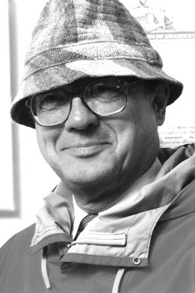

|  |
1973 год Charles W. Bachman (1924-2017) «За выдающийся вклад в технологию баз данных» |
Страна: США
Образование: Доктор философии в области электротехники, Калифорнийский университет (Беркли), 1967
О лауреате
Знакомство Bachman с компьютерами произошло во время Второй мировой войны, когда он служил в войсках ПВО на Юго-западном театре военных действий. Там ему впервые пришлось столкнуться с использованием управляющих компьютеров для наведения 90мм орудий. После окончания магистратуры в Государственном Колледже штата Мичиган в 1950 году, Bachman устраивается на работу в крупную химическую компанию Dow Chemical, в которой основывает Департамент обработки данных, но из-за финансовых проблем в компании и отмены поставки компьютеров, в 1960 году переходит в General Electric. Там он работает над проектом «интегрированные системы» и разрабатывает Manufacturing Information and Control System (MIACS) для одного из заводов GE. Используя один из первых доступных дисковых накопителей, его команда опередила многих других в решении фундаментальных проблем работы с данными. Важнейшее изобретение, которое было воплощено в жизнь в 1963 году – Integrated Data Store (IDS). IDS поддерживало единый набор общих файлов на диске, вместе с инструментам для их структурирования и хранения. Программы, отвечающие за конкретные задачи, получали и обновляли эти файлы, посылая запросы к IDS. Это позволило прикладным программистам получить набор команд, для работы с данными, который вскоре будет назван Data Manipulation Language. Позже, работая в маленькой компании Cullinet, он разрабатывает новую версию своей СУБД под названием IDMS, поддерживающую мейнфреймы IBM. В 1983 году Bachman открывает фирму Bachman Information Systems, специализирующуюся на технике под названием Computer-aided software engineering и обратной разработке.
Ключевые слова: Integrated Data Storage
Краткая библиография
| 1. |
Bachman, C. W., “The Programmer as Navigator,” Communications of the ACM, Vol. 16, Num. 11, November 1973, pp. 653-658. Наградная речь Bachman была итогом нового значения важности систем управления базами данных для административной вычислительной работы, результатов работы программиста и центральной позиции навигации в сетевой модели данных. |
| 2. |
Bachman, C. W., “The Origin of the Integrated Data Store (IDS): The First Direct-Access DBMS,” IEEE Annals of the History of Computing, Vol. 31, Num. 4, Oct-Dec 2009, pp. 42-54. Это отчёт о создании первой системы управления базой данных. |
| 3. |
Bachman, C. W., "Data Structure Diagrams," Data Base, vol. 1, no. 2, Summer 1969, pp. 4-10. Bachman использовал методы диаграмм для структур данных с начала 1960-х годов. Представленная в статье версия имеет чёткое сходство с современными методами. |
| 4. |
Bachman, C. W., “A Personal Chronicle: Creating Better Information Systems, with Some Guiding Principles,” IEEE Transactions on Knowledge and Data Engineering, Vol. 1, Num. 1, March 1989, pp. 17-32. В своих мемуарах Bachman анализирует свои достижения на разных этапах карьеры и извлекает из них уроки. |